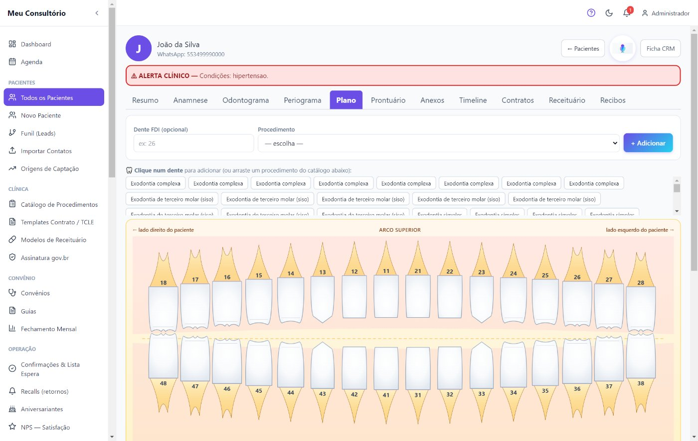
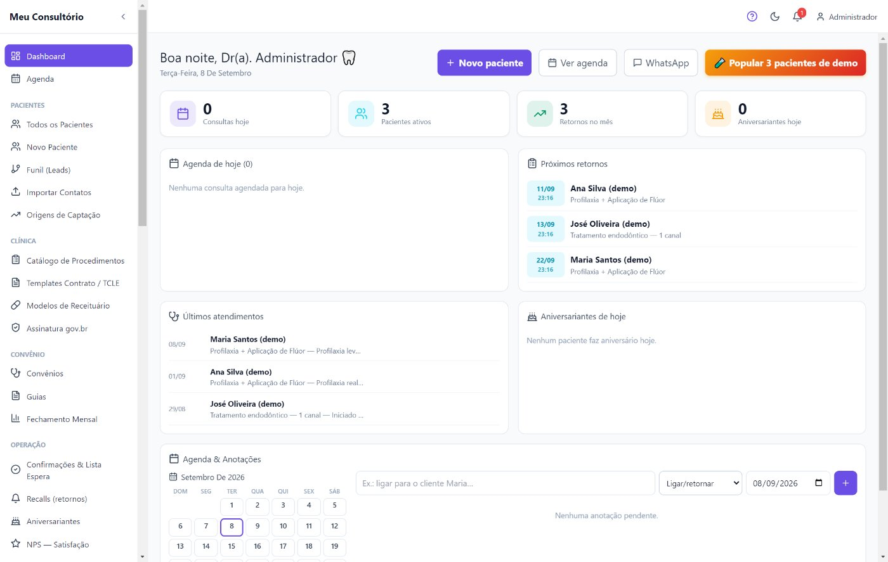
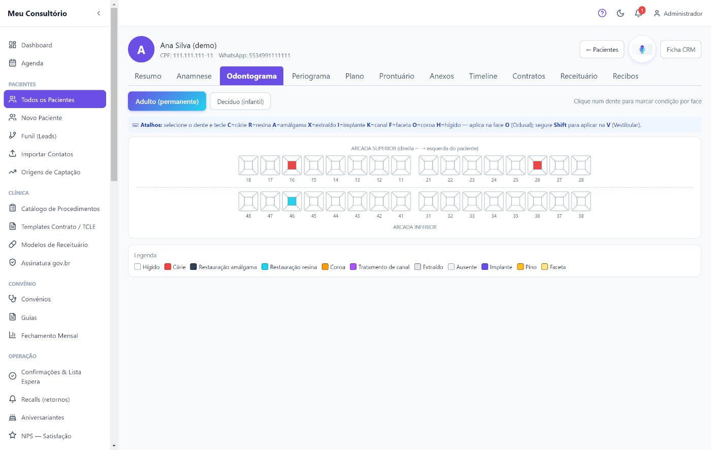
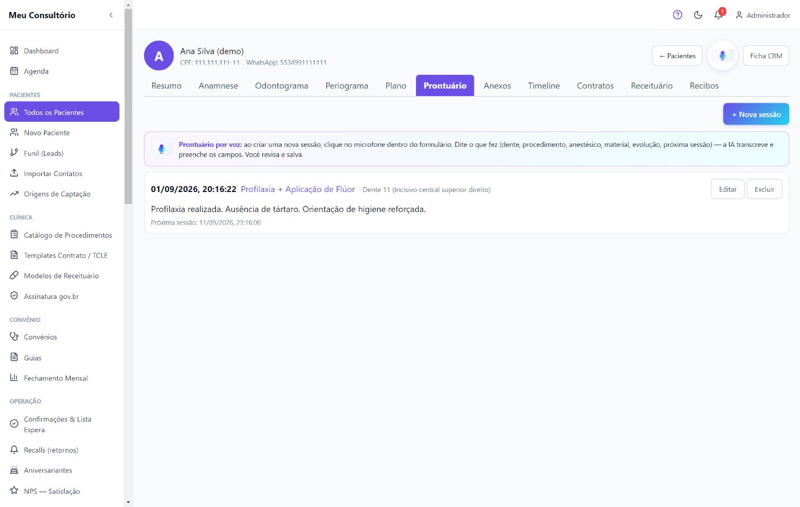
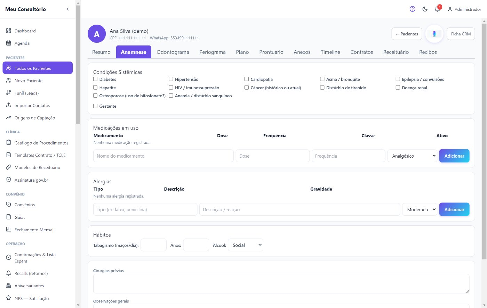
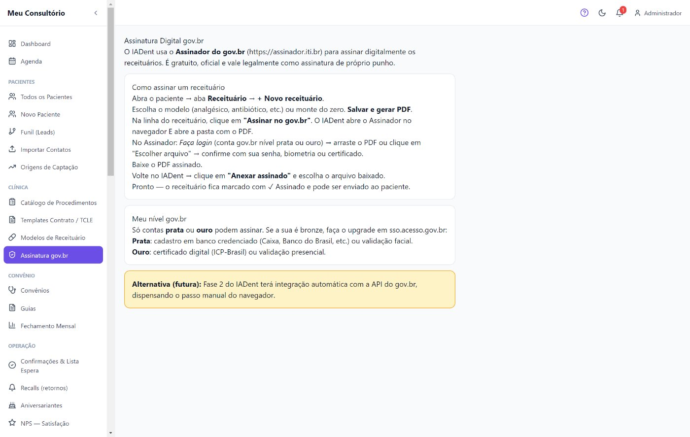
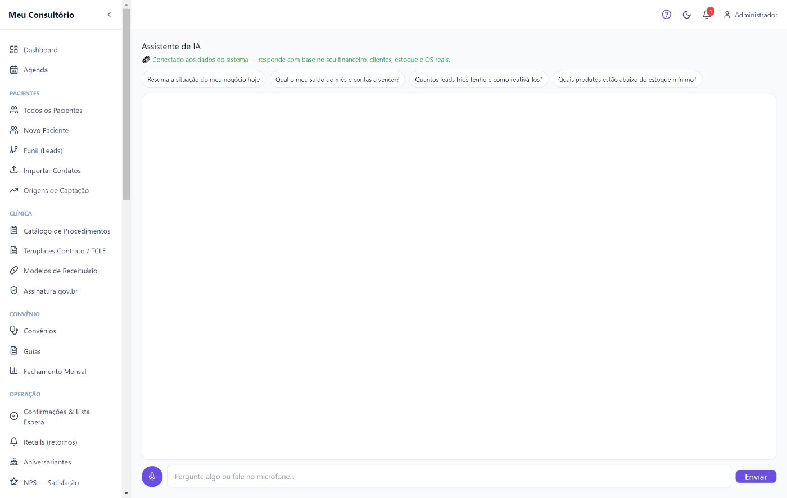

Agenda, prontuário, odontograma, plano de tratamento, receituário e documentos digitais, convênios, financeiro, WhatsApp e IA — tudo em um só programa para Windows. Funciona offline.
Não é promessa de folheto. São as telas reais do programa que vai ficar no computador do seu consultório.

Clique no dente e monte o plano procedimento por procedimento, com valores e alerta clínico do paciente. O orçamento fica visual — o paciente entende e aprova na cadeira.

Consultas de hoje, pacientes ativos, próximos retornos, últimos atendimentos e aniversariantes — o consultório inteiro num painel só, sem abrir agenda de papel.

Adulto e decíduo (infantil). Marque cárie, restauração, canal, coroa, implante e extração por face, com legenda e atalhos de teclado.

Resumo, anamnese, plano, prontuário, anexos, timeline, contratos, receituário e recibos — todo o histórico do paciente em abas, num lugar só.

Condições sistêmicas, medicações, alergias e hábitos num formulário guiado — e o alerta clínico aparece sozinho na hora do atendimento.

Receita, atestado, contrato e TCLE com modelos prontos. O IADent gera o PDF na hora — você assina na tela, imprime ou usa a assinatura oficial gov.br — e envia pelo WhatsApp.

Conectada ao financeiro, aos pacientes e à agenda reais. Pergunte por texto ou por voz: "resume o meu dia", "qual o saldo do mês e contas a vencer".
Nada de agenda de papel, ficha na gaveta, receita na mão e o WhatsApp no celular pessoal. O IADent reúne tudo num programa só — instalado, rápido e independente de internet.
Agenda, prontuário, odontograma, receita, convênio e financeiro no mesmo lugar — sem trocar de sistema no meio do atendimento.
Roda direto no computador do consultório. A internet caiu? O sistema continua. Os dados dos pacientes ficam com você, com backup automático.
IA conectada aos seus números: resume o dia, aponta contas a vencer, retornos da semana e pacientes para reativar.
O IADent agenda sozinho as mensagens do consultório: lembrete 24h antes, aviso extra para quem costuma faltar, parabéns de aniversário e recall de retorno. Menos cadeira vazia, mais paciente voltando.
Exemplo ilustrativo das mensagens automáticas do IADent.
Todo paciente com sessão marcada recebe a confirmação um dia antes, com data, hora e procedimento — sem você digitar nada.
Pacientes com histórico de faltas recebem um segundo lembrete 4h antes. O risco é calculado sozinho, paciente por paciente.
Limpeza de 6 meses, aniversário e pós-atendimento com modelos prontos. Envie um a um pela inbox ou em lote para uma lista.
Conversas, receitas, contratos e sessões reunidos na ficha — a linha do tempo completa de cada paciente.
Do primeiro contato do interessado ao recall do paciente fiel — sem ficha de papel, sem caderno, sem trocar de programa.
Agenda por dia e semana, lista de espera e confirmação automática por WhatsApp. Marcações de agendada, realizada, falta e cancelada.
Ficha completa do paciente com anamnese, alertas clínicos, anexos e timeline. Todo o histórico em abas, num lugar só.
Adulto e decíduo, marcação por face do dente, periograma de sondagem. Padrão FDI com legenda clara.
Monte o plano na arcada anatômica clicando no dente, com procedimentos do catálogo, valores e aprovação do paciente.
Receita, atestado, contrato e TCLE com modelos prontos. Gera o PDF na hora, pronto para assinar — na tela, impresso ou pela assinatura oficial gov.br.
Templates de contrato e termo de consentimento (TCLE), recibos e documentos em PDF com a identidade do consultório.
Cadastro de convênios, emissão de guias e fechamento mensal por convênio — o que a clínica faturou, organizado.
Contas a pagar e a receber, fluxo de caixa e recibo em PDF. O caixa do consultório sob controle, sem planilha.
Retornos programados, aniversariantes e pesquisa de satisfação (NPS) para saber o que o paciente achou do atendimento.
Inbox, disparo em massa com proteção anti-ban, campanhas e um assistente de IA que lê os números do consultório.
Pergunte "como está o meu consultório hoje" e receba um panorama de agenda, retornos e caixa em segundos.
Aponta o saldo do mês, contas a vencer e para onde o dinheiro está indo — antes de virar aperto.
Lista quem está em recall, quem tem plano de tratamento em aberto e quem faltou, com sugestão de reabordagem.
Fale por texto ou pelo microfone. Use a inteligência que preferir — Claude, GPT ou Gemini — com a sua própria chave.
Documentos gerados na hora e prontos para assinar, dados dos pacientes no seu próprio computador, backup automático e login por usuário. Seu prontuário protegido, o paciente resguardado.
O PDF é gerado sempre pelo IADent — você assina na tela, imprime ou usa a assinatura oficial gov.br (ICP-Brasil). Nunca fica travado por um sistema externo fora do ar.
O prontuário fica no computador do consultório, não na nuvem de terceiros. Backup automático diário.
Login por dentista e recepção, com níveis de acesso. Cada um vê o que precisa.
Todos os recursos, atualizações e suporte por WhatsApp — instalação e treinamento inclusos. Teste grátis por 14 dias.
Planos anuais · instalação e treinamento inclusos · suporte por WhatsApp (34) 98408-1020
Baixe e teste 14 dias grátis, ou fale com a gente pelo WhatsApp. Mostramos o sistema funcionando e tiramos suas dúvidas — sem compromisso.